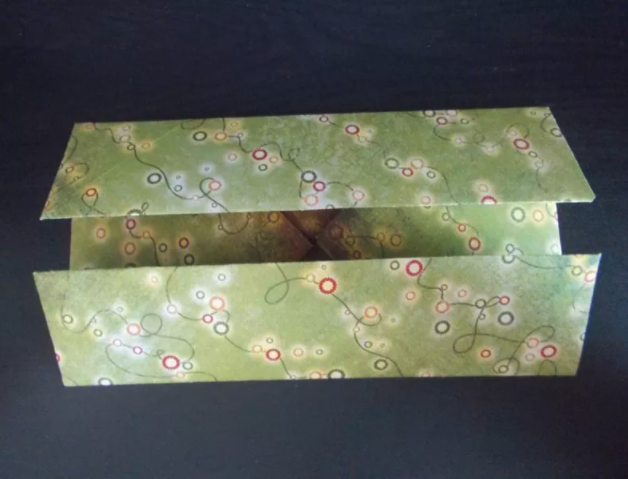
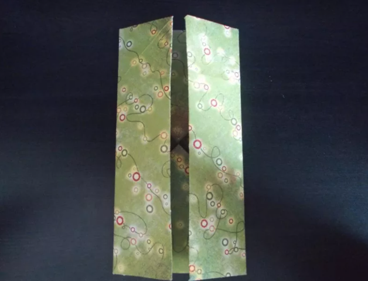
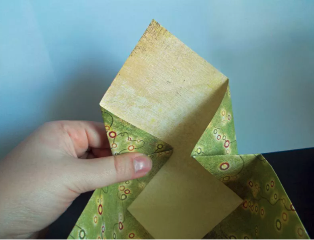

BY CLICKING ON "MY GIT HUB PAGE" YOU CAN GET AMAZING PROJECTS MADE BY ME
1: To begin the origami gift box, fold one sheet of paper in half horizontally.
Unfold it, and then fold it in half vertically. Unfold to reveal a
cross-crease pattern. Then, fold each corner into the center until
your paper looks like this model.

2: Fold the top and bottom to the center of the paper as shown here. Unfold.
3: Fold the left and right sides to the center of the paper.
4: Open the two corners diagonal to each other, leaving the other
two corners folded. Use your forefingers to coax the corner folds
in, pulling the third edge upward. Tuck the top flap in to form
the side of the box. Repeat on the opposite side to complete the box
If you are planning to use the box to give a gift that is heavy,
secure the flaps with a glue stick or a bit of double-sided tape
for reinforcement.
5: Cut the second sheet of paper to measure approximately
11 1/2 inches by 11 1/2 inches. Then, repeat
steps 1 through 4 to fold a base for your origami
gift box.